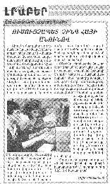
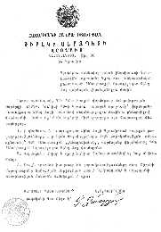

| Panorama d'événements |
|  |
La décision du gouverneur de la région de Shirak au sujet de la re-nomination du lycée pédagogique de base de l'institut de Gjumry par le lycée Maître Suprême Ching Hai. |
|  | Extrait du journal "The pedagogical institute news", septembre 1999 |